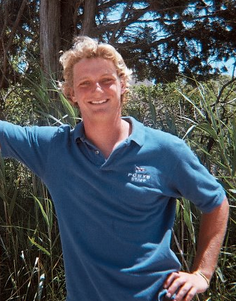

James Downer

Education
Tufts University, Class of 2015
Bachelor of Science in International Relations
Current GPA: 3.05
Work Experiance
Deckhand on SSV Tabor Boy, Virgin Islands, January 2011-April
Worked as a deckhand aboard a 92ft schooner.
Orchestrated a research program on Elkhorn Coral.
Sailed north from the Virgin Islands to Massachusetts.
Point O' Woods Yacht Squadron, New York, July 2005 - August 2011
Junior Instructor
Teaching sailing to campers aged 7-12 in various small sailing craft.
Senior Instructor – August 2009
Teaching campers aged 7-12 with emphasis on coaching racing
Racing Master – June 2010 - August 2011
Running the racing program focused around 420s and optis.
Bay Head Yacht Club, New York, June 2012 - August 2012
Intermediate Optimist coach
Activities
Tufts University Varsity Sailing Team, Medford, MA, September 2011-Present
Competitively racing Larks, Flying Juniors, 420s, MIT Tech Dinghies, Flying Dutchman
Tufts University Compass Entrepreneurial Program, Medford, MA, July 2012-July 2013
Mentor to incoming freshmen to give them the resources and the advice to begin their own ventures in social entrepreneurship
Reforestation research trip to Costa Rica, January 2012
Volunteer Firefighter - March 2010 - August 2010
Youth Hockey Referee, winter 2005-’06 & winter 2012-‘13
Computer:
Proficiency in C and C++
Webmaster, October 2011-Present
Tufts Sailing
Return Home